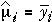
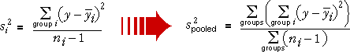

Estimating the parameters
We now restrict attention to normal models that have the same standard deviation in each of the g groups.
| Group i: | Y ~ normal (µi , σ) |
There are g + 1 parameters that must be estimated from the data. Each group mean can be estimated with the corresponding sample mean,

The sample standard deviation in any single group, si, is a valid estimate of σ. How should these g separate estimates be combined to give a single pooled estimate of σ?
Pooled estimate of variance
It is easier to describe estimation in terms of variance — the square of the standard deviation
From the data in a single group (say group i), the sample variance is an estimate of σ2,
If the sample sizes are the same in all groups, the pooled variance is the average of these group variances,

Mixed sample sizes (optional)
If the sample sizes are not equal in all groups, a more complex formula is needed. The best estimate of σ2 is found by adding the numerators and denominators of the formulae for the g separate group variances,

To express this more mathematically, we use two subscripts for each value, so yij denotes the j 'th of the ni values in group i , for i = 1 to g . The pooled estimate of σ2 can then be written as

Illustration of pooled variance
The diagram below shows a random sample from a normal model in which the group means differ, but all groups have the same variance, σ2 = 0.9. (The grey bands show the means ± 2 standard deviations for the model.) Note that the crosses have been jittered a little (moved horizontally) to separate them within each group.
The vertical coloured lines from the crosses in each group to the group mean are the values whose sums of squares are the numerators of the equations for the si2.
The numerator of the pooled estimate of σ2 is the sum of the numerators for the group variances. The denominator is the sum of their denominators.
Note that the numerator is the sum of the squared lengths of all coloured vertical lines.
When all group sizes are the same, the pooled estimate is the average of the three group variances.
Use the pop-up menu to change the sample sizes. Observe that the pooled variance is closest to the variance in group 1, the biggest group. Note that if one group has only a single observation, then it cannot contribute to the estimate of the pooled variance.